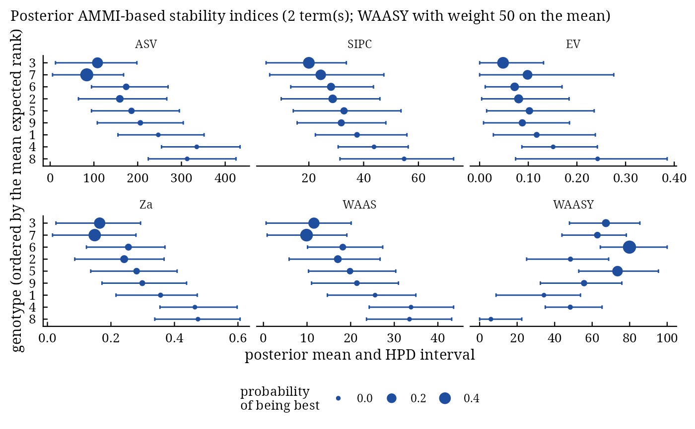

bam_ammi_indices() computes the AMMI stability value and the other stability indices built from the
singular values and genotype scores of an AMMI or GGE fit on every posterior draw: ASV (Purchase et al. 2000),
SIPC (Sneller et al. 1997), EV (Zobel 1994), Za (Zali et al. 2012), WAAS and the mean-stability index WAASY
(Olivoto et al. 2019).
Arguments
- fit
a result of
bayes_ammi().- higher_better
TRUE(default) when larger values of the trait are better (for WAASY).- .weight_y
weight \(\theta_Y\) (0-100) of the mean in WAASY (default 50, equal weights).
Value
An object of class c("bam_ammi_indices", "bam_result", "list") with indices and
means, as in bam_indices().
Methods: print(), plot(), bam_interpret(), bam_cite().
Details
With \(K\) multiplicative terms, singular values \(\lambda_k\), genotype scores \(\alpha_{ik}\), coordinates \(\mathrm{PC}_{ik} = \lambda_k^{1/2}\alpha_{ik}\) and the share of term \(k\) in the fitted interaction \(\theta_k = \lambda_k^2/\sum_m\lambda_m^2\), on every draw:
ASV\(\sqrt{(\lambda_1^2/\lambda_2^2\,\mathrm{PC}_{i1})^2 + \mathrm{PC}_{i2}^2}\), with the ratio of the posterior means of the singular values (as in
bam_stability(); a ratio of draws explodes when \(\lambda_2\) comes near zero); needs \(K \ge 2\).SIPC\(\sum_k|\mathrm{PC}_{ik}|\).
EV\(\sum_k\alpha_{ik}^2/K\).
Za\(\sum_k\theta_k|\alpha_{ik}|\).
WAAS\(\sum_k\theta_k|\mathrm{PC}_{ik}|\) (the weights sum to one).
WAASY\((\theta_Y R^Y_i + (100 - \theta_Y)R^W_i)/100\), where \(R^Y_i\) rescales the genotype means to 0-100 (100 for the best) and \(R^W_i\) rescales WAAS to 0-100 (100 for the most stable); larger is better.
All but WAASY are smaller for more stable genotypes. The shares \(\theta_k\) are those of the \(K\) fitted terms; Zali et al. (2012) and Olivoto et al. (2019) use the shares of the significant terms in the whole interaction, which differ by a constant factor for Za and not at all for WAAS.
References
Purchase, J. L., Hatting, H. and van Deventer, C. S. (2000). Genotype x environment interaction of winter wheat (Triticum aestivum L.) in South Africa: II. Stability analysis of yield performance. South African Journal of Plant and Soil, 17(3), 101–107.
Sneller, C. H., Kilgore-Norquest, L. and Dombek, D. (1997). Repeatability of yield stability statistics in soybean. Crop Science, 37(2), 383–390.
Zobel, R. W. (1994). Stress resistance and root systems. In Proceedings of the Workshop on Adaptation of Plants to Soil Stress, INTSORMIL Publication 94-2, 80–99. University of Nebraska-Lincoln.
Zali, H., Farshadfar, E., Sabaghpour, S. H. and Karimizadeh, R. (2012). Evaluation of genotype x environment interaction in chickpea using measures of stability from AMMI model. Annals of Biological Research, 3(7), 3126–3136.
Olivoto, T., Lucio, A. D. C., da Silva, J. A. G., Marchioro, V. S., de Souza, V. Q. and Jost, E. (2019). Mean performance and stability in multi-environment trials I: combining features of AMMI and BLUP techniques. Agronomy Journal, 111(6), 2949–2960. doi:10.2134/agronj2019.03.0220
See also
Other stability:
bam_indices(),
bam_stab_priors(),
bayes_stability()
Author
Muhammad Yaseen (myaseen208@gmail.com)
Examples
data(Maiz)
fit <-
bayes_ammi(
.data = Maiz
, .y = y
, .gen = entry
, .env = site
, .rep = rep
, .nIter = 600
, .k = 2
, .burnin = 100
, .thin = 1
, .chains = 1
, .priors = bam_priors(
mu_mean = 0
, mu_var = 1e+8
, tau_mean = 0
, tau_var = 1e+8
, delta_mean = 0
, delta_var = 1e+8
, lambda_mean = 0
, lambda_var = 1e+8
, nu = 1
, s2 = NULL
)
, .level = 0.95
, .seed = 1
, .align = TRUE
, .model = "AMMI"
, .het = FALSE
, .waic = TRUE
)
ai <-
bam_ammi_indices(
fit = fit
, higher_better = TRUE
, .weight_y = 50
)
ai$means
#> Gen ASV SIPC EV Za WAAS WAASY
#> <char> <num> <num> <num> <num> <num> <num>
#> 1: 3 108.17638 19.99875 0.04815246 0.1645441 11.580451 67.343405
#> 2: 7 83.68294 24.33924 0.09849189 0.1489174 9.890257 62.790850
#> 3: 6 173.67925 28.08731 0.07201723 0.2551060 18.199501 79.898702
#> 4: 2 159.20470 28.69152 0.08021118 0.2417117 17.061894 48.436409
#> 5: 5 185.83878 32.83526 0.10235369 0.2808379 19.854165 73.534323
#> 6: 9 206.14849 31.83557 0.08776255 0.2988258 21.430500 55.704179
#> 7: 1 247.08044 37.58699 0.11727703 0.3562615 25.598158 34.302523
#> 8: 4 335.02545 43.79353 0.15119321 0.4644012 33.844164 48.344597
#> 9: 8 313.14472 54.78083 0.24254077 0.4739942 33.491238 6.016055
#> rank_overall
#> <num>
#> 1: 2.500278
#> 2: 2.879167
#> 3: 3.645278
#> 4: 4.282778
#> 5: 4.416389
#> 6: 4.978056
#> 7: 6.409167
#> 8: 7.546111
#> 9: 8.342778
plot(x = ai)
#> `height` was translated to `width`.
